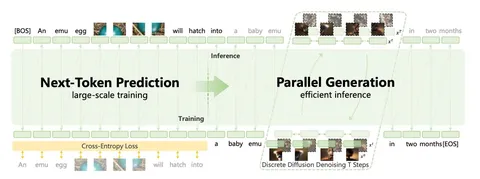
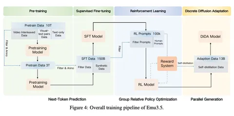

Emu3.5: Native Multimodal Models are World Learners
Сегодня разбираем работу от команды китайского Института искусственного интеллекта, которая продолжает гнуть свою линию и выкатывает очередную модель семейства Emu. На этот раз — Emu3.5. В отличие от предыдущих работ, здесь авторы прямо говорят, что пытаются построить не просто мультимодальную модель, а некую world model. Ниже разберёмся, что под этим понимают.
Сразу о путанице в названиях. Есть Emu от Meta* — text-image-модель, важная в своё время как ранний пример качественного SFT на небольших датасетах. И есть отдельная серия работ Emu от авторов этой статьи.
Например, год назад, у них была работа под названием Emu3: Next-Token Prediction is All You Need. Тогда идея была довольно простой: свести текст, картинки и видео к единой задаче next-token prediction. Генерации выглядели сочными, но при внимательном рассмотрении страдали от типичных артефактов дискретизации — текстуры «плыли», мелкие детали разваливались.
В Emu3.5 амбиции заметно выросли. Архитектурно всё по-прежнему прямолинейно: один decoder-only-трансформер на 34B параметров, обучаемый чисто авторегрессионно. Самое интересное — в данных. Вместо того чтобы опираться в основном на пары картинка-текст, модель обучают преимущественно на чередующихся (interleaved) видео-текстовых последовательностях из интернета. Видео нарезают на ключевые кадры, аудио транскрибируют с помощью ASR с таймстемпами, а затем всё это склеивают в одну длинную последовательность: в сумме — больше 10 триллионов токенов.
Так модель учится не отдельным сценам, а событиям во времени: динамике, переходам, причинно-следственным связям. Это и есть их практическое определение «world learning». Кроме видео используют обычные image-text-данные и большой объём text-only-данных.
И это ещё не финал: после претрейна модель доучивают — сначала на гигантском SFT (150 млрд сэмплов), а потом через RL-алайнмент, чтобы она вела себя адекватно и по тексту, и по картинкам.
Все модальности токенизируются в общее дискретное пространство. Словарь модели — около 280k токенов, из которых ~150k приходятся на текст, а остальная часть — на визуальные токены. Для визуальной части используется собственный токенизатор с REPA-подобной стабилизацией через SigLIP. Авторы честно признают, что дискретизация всё равно даёт артефакты, поэтому опционально добавляют диффузионный декодер поверх авторегрессионной генерации.
Отдельная важная часть — DiDA (Discrete Diffusion Adaptation). Так пробуют решить главную боль авторегрессии: медленную генерацию изображений. На этапе инференса модель временно переводится в режим дискретной диффузии: визуальные токены зашумляются и затем восстанавливаются за несколько итераций. За счёт этого генерация картинок ускоряется примерно в 20 раз без заметной потери качества.
На выходе Emu3.5 умеет довольно широкий спектр вещей: выдаёт длинные согласованные визуальные нарративы, генерацию историй с картинками, пошаговые визуальные инструкции и даже навигацию по сцене по текстовым командам — как будто внутри есть некоторое представление пространства. В классических задачах text-to-image и image editing модель на уровне сильных закрытых мультимодальных моделей.
В итоге, даже если с громким термином world model можно поспорить, сама траектория развития Emu выглядит любопытно — продолжим следить за ними.
Разбор подготовил❣ Сергей Кастрюлин
CV Time
___
Компания Meta признана экстремистской; её деятельность в России запрещена.
Сегодня разбираем работу от команды китайского Института искусственного интеллекта, которая продолжает гнуть свою линию и выкатывает очередную модель семейства Emu. На этот раз — Emu3.5. В отличие от предыдущих работ, здесь авторы прямо говорят, что пытаются построить не просто мультимодальную модель, а некую world model. Ниже разберёмся, что под этим понимают.
Сразу о путанице в названиях. Есть Emu от Meta* — text-image-модель, важная в своё время как ранний пример качественного SFT на небольших датасетах. И есть отдельная серия работ Emu от авторов этой статьи.
Например, год назад, у них была работа под названием Emu3: Next-Token Prediction is All You Need. Тогда идея была довольно простой: свести текст, картинки и видео к единой задаче next-token prediction. Генерации выглядели сочными, но при внимательном рассмотрении страдали от типичных артефактов дискретизации — текстуры «плыли», мелкие детали разваливались.
В Emu3.5 амбиции заметно выросли. Архитектурно всё по-прежнему прямолинейно: один decoder-only-трансформер на 34B параметров, обучаемый чисто авторегрессионно. Самое интересное — в данных. Вместо того чтобы опираться в основном на пары картинка-текст, модель обучают преимущественно на чередующихся (interleaved) видео-текстовых последовательностях из интернета. Видео нарезают на ключевые кадры, аудио транскрибируют с помощью ASR с таймстемпами, а затем всё это склеивают в одну длинную последовательность: в сумме — больше 10 триллионов токенов.
Так модель учится не отдельным сценам, а событиям во времени: динамике, переходам, причинно-следственным связям. Это и есть их практическое определение «world learning». Кроме видео используют обычные image-text-данные и большой объём text-only-данных.
И это ещё не финал: после претрейна модель доучивают — сначала на гигантском SFT (150 млрд сэмплов), а потом через RL-алайнмент, чтобы она вела себя адекватно и по тексту, и по картинкам.
Все модальности токенизируются в общее дискретное пространство. Словарь модели — около 280k токенов, из которых ~150k приходятся на текст, а остальная часть — на визуальные токены. Для визуальной части используется собственный токенизатор с REPA-подобной стабилизацией через SigLIP. Авторы честно признают, что дискретизация всё равно даёт артефакты, поэтому опционально добавляют диффузионный декодер поверх авторегрессионной генерации.
Отдельная важная часть — DiDA (Discrete Diffusion Adaptation). Так пробуют решить главную боль авторегрессии: медленную генерацию изображений. На этапе инференса модель временно переводится в режим дискретной диффузии: визуальные токены зашумляются и затем восстанавливаются за несколько итераций. За счёт этого генерация картинок ускоряется примерно в 20 раз без заметной потери качества.
На выходе Emu3.5 умеет довольно широкий спектр вещей: выдаёт длинные согласованные визуальные нарративы, генерацию историй с картинками, пошаговые визуальные инструкции и даже навигацию по сцене по текстовым командам — как будто внутри есть некоторое представление пространства. В классических задачах text-to-image и image editing модель на уровне сильных закрытых мультимодальных моделей.
В итоге, даже если с громким термином world model можно поспорить, сама траектория развития Emu выглядит любопытно — продолжим следить за ними.
Разбор подготовил
CV Time
___
Компания Meta признана экстремистской; её деятельность в России запрещена.

490 просмотров · 21 реакций
Открыть в Telegram · Открыть пост на сайте